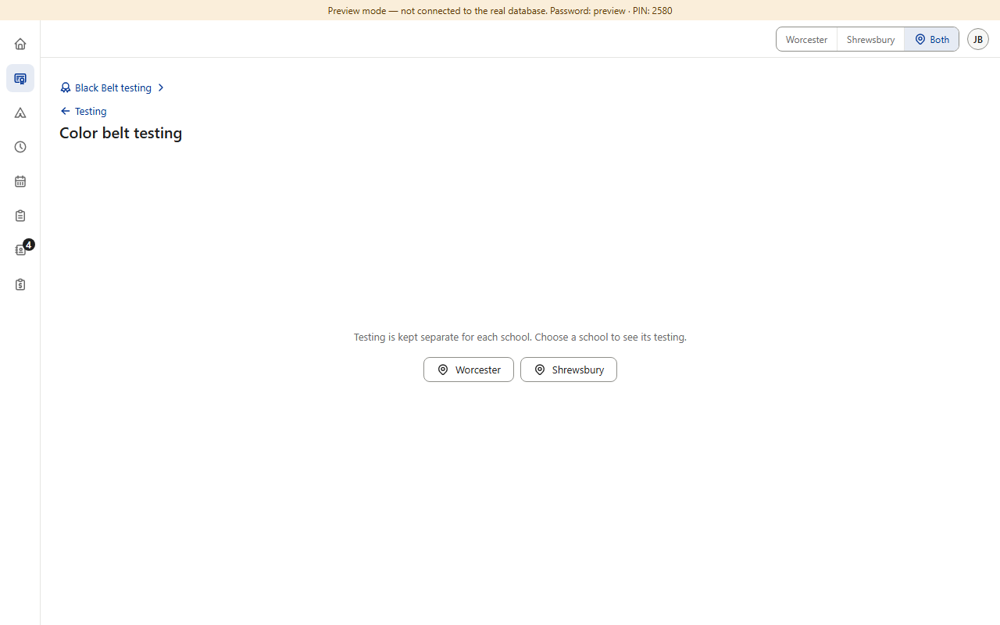
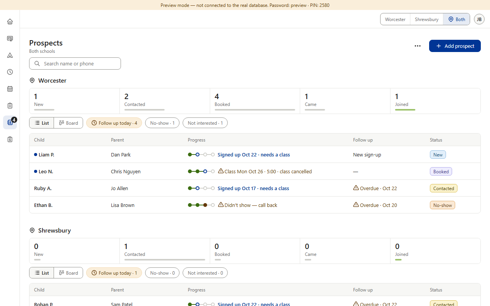
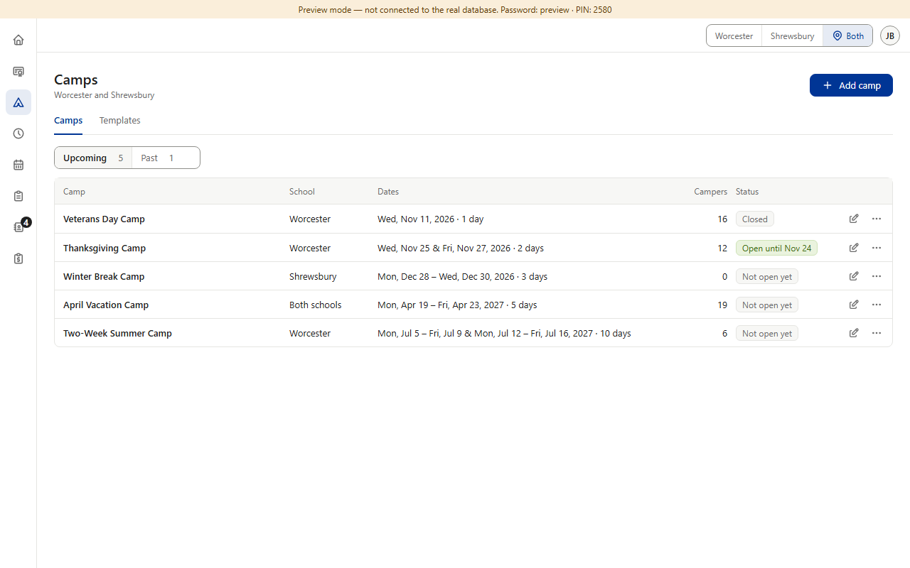
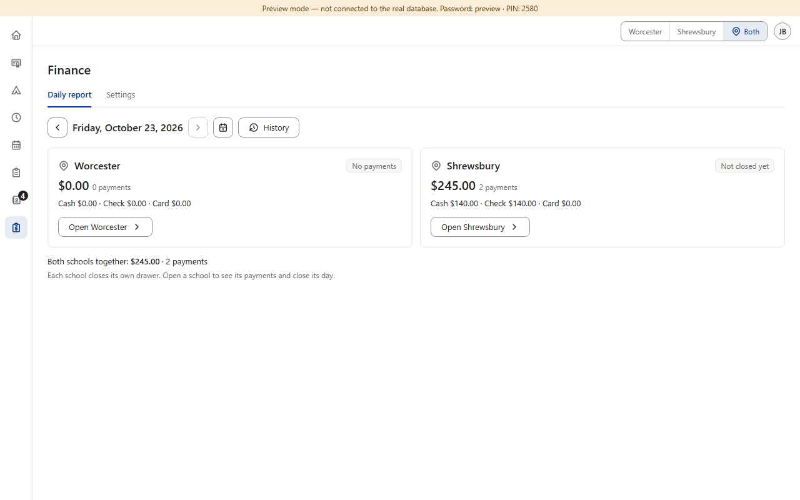
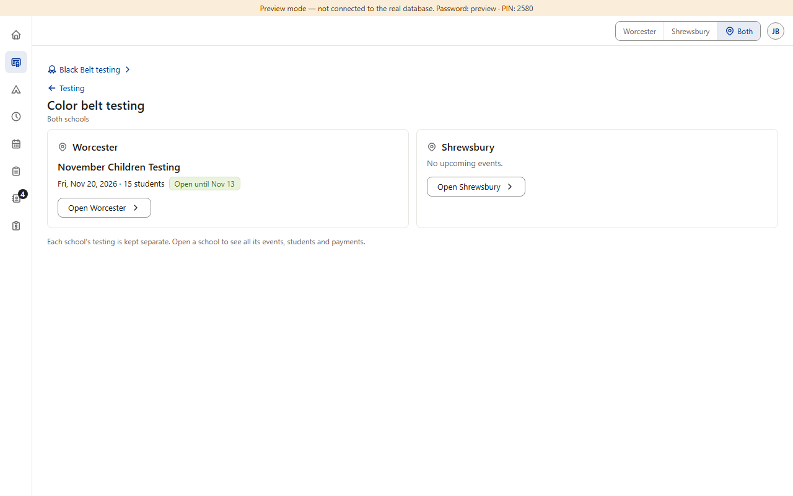
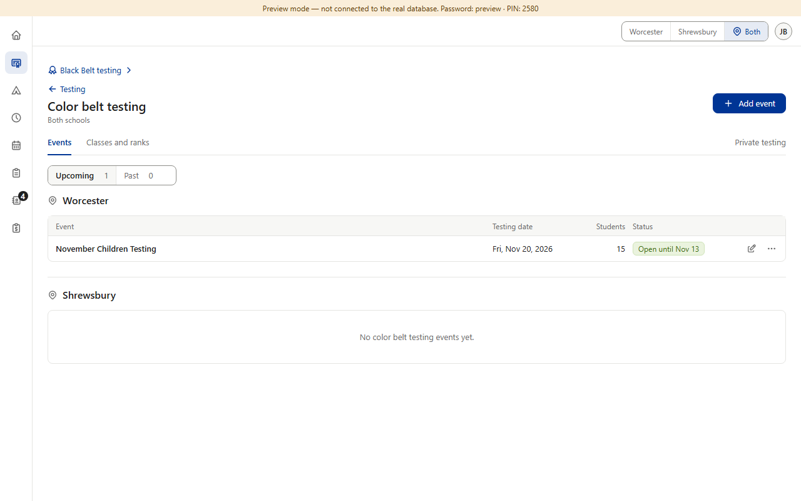

Approved in each section. With “Both” chosen, sections show both schools in one of two ways: everything, one school under the other (Prospects and Schedule; Camps with a School column; Calendar with W/S letters), or one summary box per school with “Open [school]” (Finance, v0.198 — each school closes its own drawer). Star's and Black Belt's events are for both schools anyway. Color Belt shows nothing and asks you to choose a school — your own rule (v0.34/v0.35: each school's testing kept separate so staff can't change the other school's event by mistake; “may be revisited”). The words differ too: “Both schools” (Prospects, Calendar, Forms, Camps' School column) vs “Worcester and Shrewsbury” (Home, Schedule, Camps' page line). (Preview screenshots at PC size · fake data)





